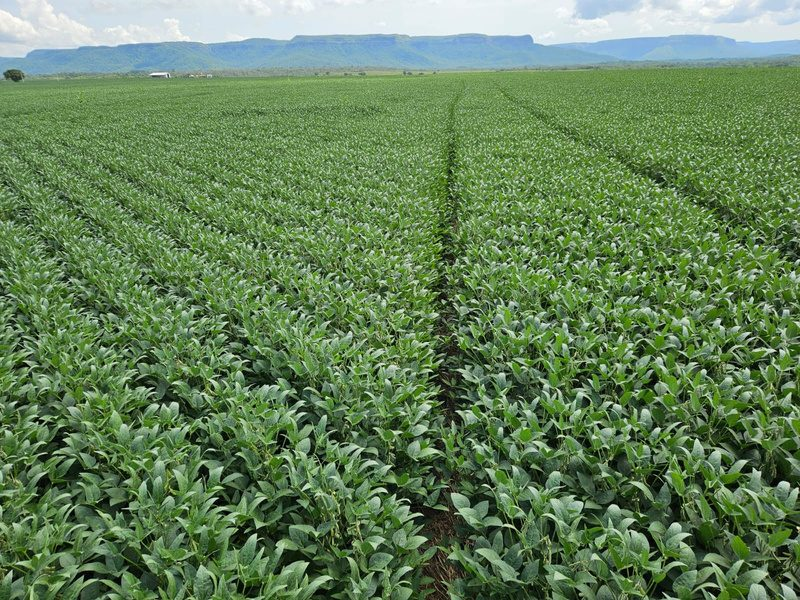
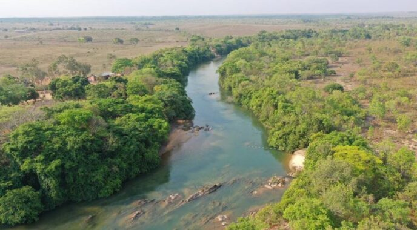
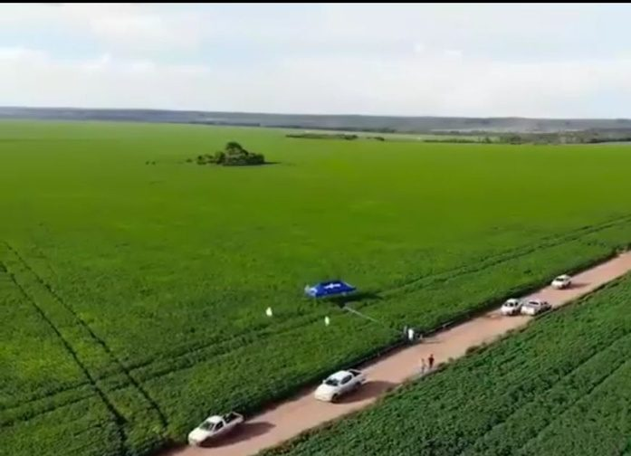
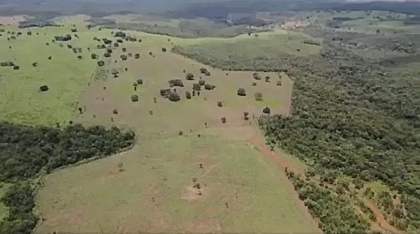

Das Portfolio
Die Farmen
Der Makler, Prime Fazendas, hält derzeit ein breites Portfolio an Farmen in ganz Tocantins, von rund 300 bis 28.500 Hektar — in unterschiedlichen Kombinationen aus Ackerbau und Viehzucht und in verschiedenen Entwicklungsstadien. Größere Farmen sind pro Hektar tendenziell günstiger, ebenso solche, die weiter von städtischen Zentren entfernt liegen oder bei denen noch mehr Land zu roden ist. Wenn Sie besondere Anforderungen haben, sucht Prime Fazendas eine passende Farm dazu.
- Die Vermittlung ist für den Käufer provisionsfrei, wie in Brasilien üblich.
- Das angebotene Land ist vollständig zusammenhängend.
- Farmen umfassen in der Regel Wohn- und Wirtschaftsgebäude; größere können eine eigene Landepiste haben. Maschinen können separat verhandelt werden.
- Häufige Verkaufsgründe: Generationswechsel bei kleineren Farmen (die Kinder der Gründer ziehen das Stadtleben vor) sowie Gewinnmitnahmen oder Portfolio-Umstrukturierungen bei größeren Agrarunternehmen.
- Lokale Flächeneinheit: 1 Alqueire in Tocantins = 4,8 Hektar.
Vier Beispiele im Detail
Vier Farmen aus dem aktuellen Portfolio (Codes 14, 46, 53 und 56). Weitere Fotos und alle Details zu jeder Farm sind auf Anfrage beim Makler erhältlich.

Fazenda Amazonita — 1.200 ha · Zentralregion · Cód. 14
Geeignet für Ackerbau und Rinderhaltung. 500 ha Weide, 470 ha Ackerland. Wohnhaus, Unterkünfte, Lager, Futtermühle. Großer Bach und zwei natürliche Wasserreservoirs. 60 km von Palmas.

Fazenda Turmalina do Cerrado — 28.500 ha · Südostregion · Cód. 46
Geeignet für Ackerbau und Rinderhaltung. 14.000 ha für den Ackerbau geeignet, 3.000 ha für Rinder. Wohnhaus, Verwalterhaus, Getreidetrocknung und -lager, 1.000 m Landepiste, vier Rinderstationen. 40 km Flussufer, 20 Teiche und Bäche. 70 km von der Stadt.

Fazenda Obsidiana Negra — 3.598 ha · Nordostregion · Cód. 53
Geeignet für Ackerbau. 1.700 ha in Kultur, weitere 200–300 ha verfügbar. Wohnhaus mit vier Suiten, drei Lager, Tankstelle, Waage. Artesischer Brunnen. An der Fernstraße TO-20, 20 km von Bunge und Cargill.

Fazenda Safira do Cerrado — 1.776 ha · Zentralregion · Cód. 56
Geeignet für Rinderhaltung. 816 ha Weide. Moderne Wohnhäuser, zwei moderne Rinderstationen. Drei natürliche Brunnen, drei Wasserreservoirs, Fischteiche. 69 km von Palmas.
Das vollständige Portfolio
Die vollständige aktuelle Liste. Werte in Millionen; die Euro-Angaben verwenden den vereinfachten Referenzkurs von R$ 6 pro Euro. ★ kennzeichnet die vier oben vorgestellten Beispiele. Einige wenige Farmen liegen knapp jenseits der Grenze in Nachbarstaaten (GO, MA, PA).
| Code | Name | Stadt | Staat | Hektar | Wert R$ (Mio.) | Wert € (Mio.) | Landnutzung |
|---|---|---|---|---|---|---|---|
| 73 | Ametista do Norte | Pindorama | TO | 257 | 1.17 | 0.19 | Viehzucht |
| 57 | Cianita Azul | Rio Sono | TO | 862 | 3.30 | 0.55 | Ackerbau & Viehzucht |
| 47 | Ágata do Campo | Dianópolis | TO | 629 | 5.50 | 0.92 | Viehzucht |
| 12 | Esmeralda do Cerrado | Palmas | TO | 307 | 6.00 | 1.00 | Viehzucht |
| 58 | Opala Nobre | Barrolândia | TO | 397 | 6.50 | 1.08 | Viehzucht |
| 23 | Ouro Verde | Monte do Carmo | TO | 368 | 6.84 | 1.14 | Viehzucht |
| 61 | Pérola do Leste | Lizarda | TO | 2.320 | 7.19 | 1.20 | Ackerbau & Viehzucht |
| 67 | Ônix do Norte | Wanderlândia | TO | 643 | 8.00 | 1.33 | Ackerbau & Viehzucht |
| 43 | Obsidiana Dourada | TO | 1.655 | 8.55 | 1.43 | Viehzucht | |
| 65 | Jade dos Lírios | Rio Sono/Lizarda | TO | 2.735 | 9.00 | 1.50 | Ackerbau & Viehzucht |
| 24 | Angelita | Palmas/Lajeado | TO | 620 | 10.00 | 1.67 | Ackerbau & Viehzucht |
| 49 | Jade do Cerrado | Porto Nacional | TO | 829 | 10.00 | 1.67 | Viehzucht |
| 66 | Pérola do Norte | Nova Olinda | TO | 2.082 | 15.06 | 2.51 | Viehzucht |
| 48 | Ametista do cerrado | Sª Rosa/Chap. de Natividade | TO | 1.065 | 15.40 | 2.57 | Ackerbau & Viehzucht |
| 54 | Cristal do Cerrado | Aparecida do Rio Negro | TO | 774 | 18.00 | 3.00 | Ackerbau & Viehzucht |
| 52 | Opala do Cerrado | Rio Sono | TO | 1.527 | 20.00 | 3.33 | Ackerbau & Viehzucht |
| 56 ★ | Safira do Cerrado | Tocantinia/Lajeado | TO | 1.776 | 20.00 | 3.33 | Viehzucht |
| 29 | Obsidiana | Santa Rita do Tocantins | TO | 1.239 | 20.48 | 3.41 | Ackerbau & Viehzucht |
| 42 | Painita | Dois Irmãos | TO | 770 | 20.67 | 3.44 | Ackerbau & Viehzucht |
| 3 | Turmalina Verde | Silvanópolis | TO | 1.536 | 22.40 | 3.73 | Ackerbau & Viehzucht |
| 26 | Magnetita | Ponte Alta do TO | TO | 1.679 | 23.00 | 3.83 | Ackerbau & Viehzucht |
| 64 | Ônix do Tocantins | Goiatins | TO | 2.439 | 23.50 | 3.92 | Ackerbau & Viehzucht |
| 19 | Citrino | Aliança | TO | 1.389 | 25.00 | 4.17 | Ackerbau & Viehzucht |
| 69 | Diamante do Vale | Campos Lindos | TO | 1.825 | 25.00 | 4.17 | Ackerbau & Viehzucht |
| 51 | Ametista Real | Porto Nacional | TO | 1.210 | 27.00 | 4.50 | Viehzucht |
| 18 | Granada | Novo Acordo | TO | 1.500 | 28.00 | 4.67 | Ackerbau & Viehzucht |
| 71 | Cristal de Rocha | Almas | TO | 2.487 | 28.00 | 4.67 | Ackerbau & Viehzucht |
| 44 | Topazio do Sol | Miracema | TO | 987 | 30.60 | 5.10 | Ackerbau & Viehzucht |
| 6 | Jaspe Vermelho | Silvanópolis | TO | 998 | 40.00 | 6.67 | Ackerbau & Viehzucht |
| 22 | Ágata | Novo Acordo | TO | 2.522 | 40.00 | 6.67 | Ackerbau & Viehzucht |
| 21 | Turmalina Negra | Guarai | TO | 1.885 | 45.00 | 7.50 | Ackerbau & Viehzucht |
| 37 | Larimar | Lagoa do Tocantins | TO | 2.211 | 47.00 | 7.83 | Ackerbau & Viehzucht |
| 55 | Ônix das Veredas | Dois Irmãos | TO | 2.625 | 48.69 | 8.12 | Ackerbau & Viehzucht |
| 32 | Pedra do Sol | Pedro Afonso | TO | 2.153 | 50.00 | 8.33 | Ackerbau & Viehzucht |
| 41 | Pirita | Almas | TO | 3.020 | 50.00 | 8.33 | Ackerbau |
| 31 | Topázio Imperial | Silvanópolis | TO | 1.949 | 52.35 | 8.72 | Ackerbau & Viehzucht |
| 5 | Ametista do Vale | Silvanópolis | TO | 1.877 | 54.74 | 9.12 | Ackerbau & Viehzucht |
| 14 ★ | Amazonita | Monte do Carmo | TO | 1.200 | 55.00 | 9.17 | Ackerbau & Viehzucht |
| 27 | Galena | Fortaleza do Tabocão | TO | 2.100 | 55.00 | 9.17 | Ackerbau & Viehzucht |
| 30 | Almandina | Lagoa do Tocantins | TO | 1.239 | 55.00 | 9.17 | Ackerbau & Viehzucht |
| 34 | Ágata de fogo | Divinopolis | TO | 2.090 | 55.00 | 9.17 | Ackerbau & Viehzucht |
| 8 | Quartzo Rosa | Silvanópolis | TO | 1.350 | 55.60 | 9.27 | Ackerbau & Viehzucht |
| 72 | Diamante do Cerrado | Centenário | TO | 7.589 | 61.23 | 10.21 | Ackerbau & Viehzucht |
| 45 | Safira do Norte | Miracema | TO | 2.032 | 63.00 | 10.50 | Ackerbau & Viehzucht |
| 25 | Lápis-Lazúli do Tocantins | Novo Acordo | TO | 4.447 | 65.00 | 10.83 | Ackerbau & Viehzucht |
| 70 | Ametista do Sul | Peixe | TO | 1.762 | 67.34 | 11.22 | Ackerbau & Viehzucht |
| 16 | Turquesa do Cerrado | Novo Acordo | TO | 4.743 | 70.00 | 11.67 | Ackerbau & Viehzucht |
| 28 | Celestina | Porto Nacional/Pindorama | TO | 3.000 | 70.00 | 11.67 | Ackerbau & Viehzucht |
| 33 | Berilo | Monte do Carmo | TO | 1.611 | 70.00 | 11.67 | Ackerbau & Viehzucht |
| 36 | Rubi Negro | Cristalândia | TO | 2.328 | 75.00 | 12.50 | Ackerbau & Viehzucht |
| 68 | Jade do Campo | Quirinopolis | GO | 678 | 76.00 | 12.67 | Ackerbau |
| 35 | Coral | Santa Rita do Tocantins | TO | 2.120 | 76.65 | 12.78 | Ackerbau & Viehzucht |
| 1 | Diamante | Santa Rosa | TO | 2.000 | 80.00 | 13.33 | Ackerbau & Viehzucht |
| 13 | Pérola do Cerrado | Porto Nacional | TO | 2.804 | 85.41 | 14.23 | Ackerbau & Viehzucht |
| 74 | Vale do Diamante | Urbano Santos | MA | 24.715 | 93.92 | 15.65 | Ackerbau & Viehzucht |
| 4 | Safira Azul | Peixe | TO | 4.704 | 100.00 | 16.67 | Ackerbau & Viehzucht |
| 40 | Jade Serena | Presidente Kennedy | TO | 7.163 | 100.00 | 16.67 | Ackerbau & Viehzucht |
| 75 | Jaspe da Alvorada | Araguaçu/Alvorada | TO | 6.379 | 100.00 | 16.67 | Ackerbau & Viehzucht |
| 2 | Topázio Dourado | Silvanópolis/Santa Rosa | TO | 3.388 | 105.00 | 17.50 | Ackerbau & Viehzucht |
| 9 | Rubi do Araguaia | Silvanópolis | TO | 3.500 | 105.00 | 17.50 | Ackerbau & Viehzucht |
| 62 | Ametista da Colina | Lagoa da Confusão | TO | 2.782 | 111.28 | 18.55 | Ackerbau & Viehzucht |
| 38 | Água-Marinha | Wanderlândia | TO | 4.967 | 123.00 | 20.50 | Ackerbau & Viehzucht |
| 59 | Spinela Azul | Carmolandia/Araguaína | TO | 5.467 | 135.00 | 22.50 | Viehzucht |
| 53 ★ | Obsidiana Negra | Nordost-Region | TO | 3.598 | 140.00 | 23.33 | Ackerbau |
| 77 | Esmeralda Imperial | São Sebastião | TO | 6.720 | 150.00 | 25.00 | Viehzucht |
| 79 | Turquesa do Araguaia | Pium | TO | 4.242 | 160.00 | 26.67 | Ackerbau & Viehzucht |
| 78 | Opala do norte | Colinas | TO | 12.000 | 161.13 | 26.86 | Ackerbau & Viehzucht |
| 15 | Âmbar | Lagoa da Confusão | TO | 5.774 | 178.95 | 29.82 | Reis & Viehzucht |
| 7 | Cristal do Araguaia | Araguaína | TO | 5.300 | 180.00 | 30.00 | Ackerbau & Viehzucht |
| 76 | Obsidiana do Cerrado | Ipueiras | TO | 7.260 | 195.00 | 32.50 | Ackerbau & Viehzucht |
| 10 | Alexandrita | Formoso do Araguaia | TO | 4.862 | 200.00 | 33.33 | Ackerbau & Viehzucht |
| 60 | Obsidiana do Araguaia | Stª Fé do Araguaia | TO | 5.300 | 200.00 | 33.33 | Ackerbau & Viehzucht |
| 46 ★ | Turmalina do Cerrado | Dianópolis/Conceição do TO | TO | 28.500 | 235.00 | 39.17 | Ackerbau & Viehzucht |
| 11 | Ônix Negro | Marabá | PA | 9.874 | 244.80 | 40.80 | Ackerbau & Viehzucht |
| 39 | Cristal Azul | Palmeirante/Colinas | TO | 13.792 | 260.00 | 43.33 | Ackerbau & Viehzucht |
| 17 | Aventurina | Sandolandia | TO | 17.603 | 280.00 | 46.67 | Ackerbau & Viehzucht |
| 63 | Cristal de Carolina | Carolina | MA | 16.115 | 483.45 | 80.58 | Ackerbau & Viehzucht |